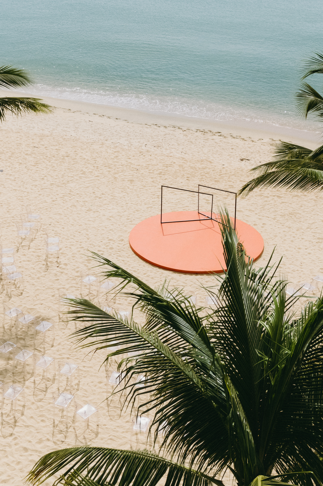
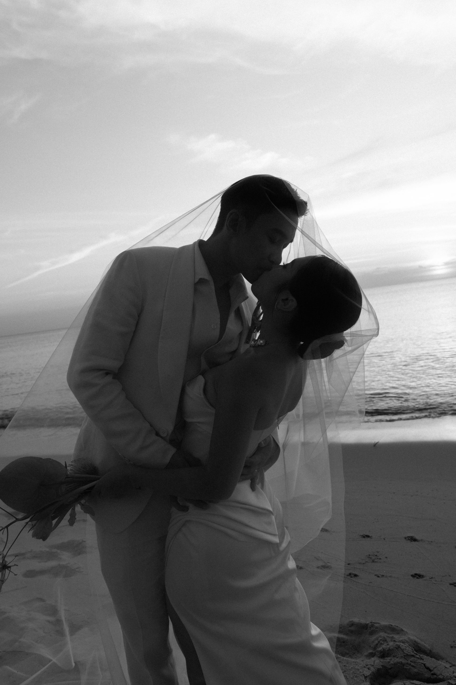

Phu Quoc Island.
An island celebration gives the day more room: guests arrive into a shared stay, the shoreline shapes the tempo and the wedding can become one part of a longer time together.
Good for a wedding that becomes a stay.
Phu Quoc works best when the celebration is planned as a small journey, not a single evening. The right base lets guests settle in, makes the transfer feel easy and gives the wedding day room to breathe between the moments that matter.

Make the island work for every guest.
Phu Quoc is warm throughout the year, but weather and transport conditions should shape the brief early. We use the place itself to make the experience feel generous rather than logistically demanding.
- 01Season
Choose a weather window, then verify it.
Vietnam Tourism describes clearer, sunnier conditions from roughly October to June and a rainier, storm-prone period around July to September. It is a planning signal, not a promise; the final date needs a current weather and vendor review.
- 02Arrival
Give the group one calm way in.
Start with the flight plan, airport transfer and one shared base. Flight schedules and direct routes change, so WIS verifies the actual guest journey against the confirmed date instead of treating an old route map as fact.
- 03Place
Keep stay, ceremony and recovery close.
The shortlist begins with the distance between rooms, ceremony, dinner and the next morning — not with a pretty image alone. That is how the island remains relaxed for the people attending.

Find the right kind of base before naming a venue.
We do not publish a static hotel list and pretend it is a recommendation. Availability, group size, access and event rules need checking for the actual date. Instead, the first conversation narrows the type of place the celebration needs.
Phong & Linh, Phu Quoc.
WIS’s current destination archive places Phong & Linh’s “Electric Heart” on the shores of Phu Quoc. It is useful proof that an island can hold a high-energy celebration without losing the sense of escape that brought everyone there.

Tell us who needs to arrive well.
Bring us the guest count, the dates you are considering and whether the weekend should feel like a retreat, a party or something in between. We will turn that into a place brief before the venue search begins.
Begin the conversation